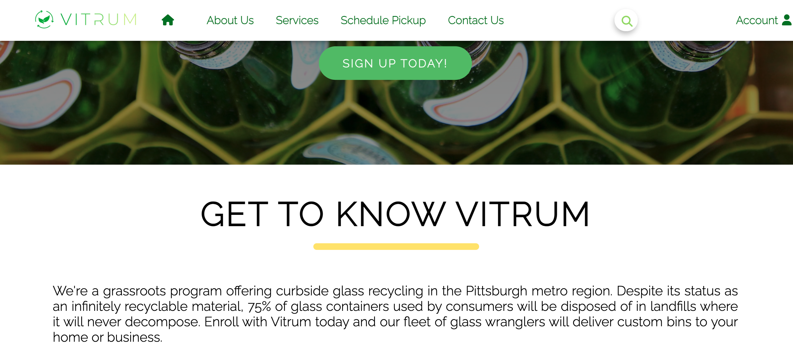
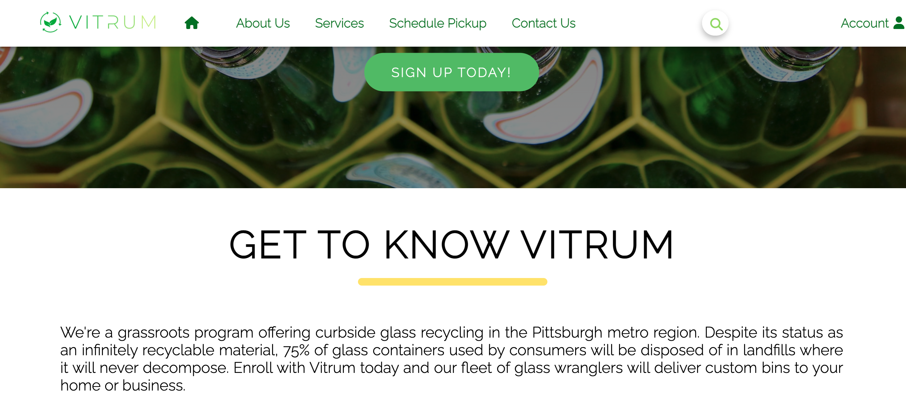

Kubra Tapan
375 Acorn Park Dr Belmont, MA 02478 ·
kubracetin.ist@gmail.com
Detail-oriented and quick learning professional with a background in data analysis, relationship building and communication. Excited to utilized skills, along with coding abilities, in a junior-level programmer role. Previous experiences in team-oriented environments that will support continued growth in the tech industry. Fluent in English and Turkish.
 
